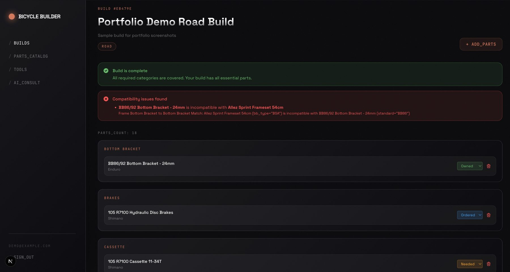
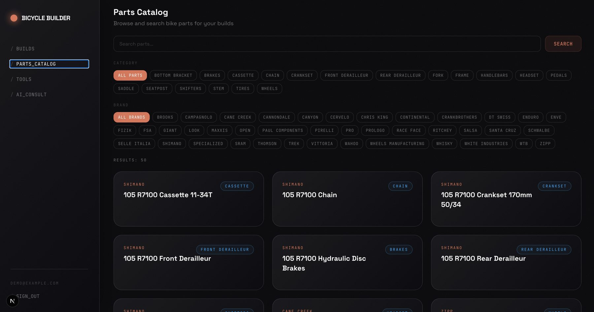
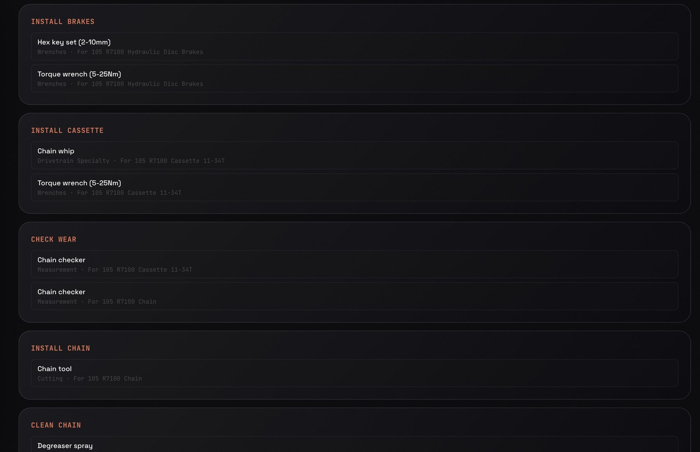

Monorepo, Two Platforms
pnpm workspaces split into apps/web (Next.js 16, React 19), apps/mobile (Expo, React Native), and shared packages for database types, theme tokens, and the scraper — one source of truth, two frontends.
A web + mobile app for planning a bicycle build part by part — with a rule-driven compatibility engine that catches mismatched standards before money is spent, and a data pipeline that turns messy manufacturer specs into something rules can actually run on. The cycling sibling of VelotFit: same domain obsession, different problem.
Building a bicycle from individual components is a compatibility minefield. Bottom bracket standards, freehub bodies, brake mounts — the failure mode is always the same: the mismatch is discovered at the workbench, not at checkout. And even when the parts fit, every install step quietly assumes workshop tools you may not own.
The app tracks what you have, what's missing, what doesn't fit together, and which tools the build will demand — before anything is ordered.
pnpm workspaces split into apps/web (Next.js 16, React 19), apps/mobile (Expo, React Native), and shared packages for database types, theme tokens, and the scraper — one source of truth, two frontends.
Compatibility isn't hard-coded. Rules live in a Postgres table and compare part spec keys with operators like equals, in, and not_in — new rules are data entry, not a code release.
Supabase RLS scopes every user's builds to their own account while the parts and tools catalogs stay publicly readable — authorization enforced in the database, not sprinkled through app code.
Selected parts imply required workshop tools — a cassette pulls in a chain whip and torque wrench automatically. The build view doubles as a shopping list for the workbench.

The point of the whole app in one screen: the build is complete, but the engine flags a BSA-threaded frame against a BB86 press-fit bottom bracket — exactly the mistake that otherwise gets discovered with the parts already on the bench.

286 components across 18 categories and 30+ brands, seeded by a scraper pipeline that normalizes each source's spec format into canonical keys.

Tools derived from the selected parts, grouped by job — install brakes, install cassette, check wear — so the build plan covers the workbench too.
Compatibility rules only work if every part speaks the same language — and manufacturer data doesn't. The same physical property arrives as different field names, units, and formats depending on the source. Run rules on raw data and they silently miss the exact mismatches they exist to catch.
The fix is a normalization pipeline: scraper modules per source map raw spec names into canonical category-specific keys, validate every normalized part with Zod schemas, and emit idempotent SQL upserts. Parts store their specs as JSONB, so categories stay flexible — but the keys the rules depend on are guaranteed. The compatibility engine then only ever reasons over clean, predictable data, and its 17 tests can actually mean something.
Honest state of the project: a prototype. The web build compiles and the compatibility suite passes; the mobile app has TypeScript errors outstanding, web lint isn't clean yet, and the AI consult page is a placeholder. Listed as-is because the architecture is the point. Architecture, data modeling, and debugging are mine; the keystrokes belong to AI coding agents I directed.